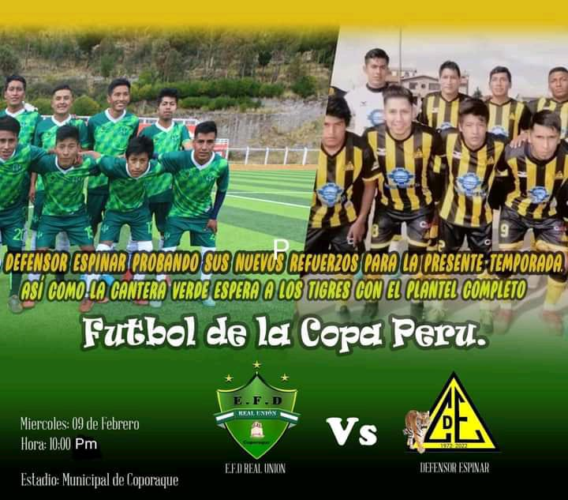

A mi lo que mas me apasiona son los deportes en especial el futbol, voley . Considero que soy bueno para los deportes
he participado en campeonatos departamentales , nacionales y llegado a tener muchos trofeos actualmente sigo con esa rutina creo que el futbol para mi es un pequeño ingreso salarial cubre mi gustos pasajes y ayudo en algo a mis padres
En el ambito de gastronomia mis platos preferidos son el ceviche, locro de pecho son los mas delicioso. Y la tecnologia me llamo la atencion mas cuando mire los partidos profesionales ver mucha tecnologia en los campos que las pelotas tenga una propia inteligencia que se puede saber a cuanto va de velocidad , tambien encontramos el Var considero que es un poco malo en el campo pero considero que se puede ver hasta los minimos errores faltas ahi
es donde mas me llamo la atencion la tecnologia artificial.

TECNOLOGIA Y LENGUAJE DE PROGRAMACION
Un lenguaje de programación es un sistema estructurado y diseñado principalmente para que las máquinas y computadoras se entiendan entre sí y con nosotros, los humanos. Contiene un conjunto de acciones consecutivas que el ordenador debe ejecutar.
FORMACION PROFESIONAL
Actualmente estudiante de la carrera de diseño de software en TECSUP curso mi III semestre, entendiendo ya mas la programación y conociendo los lenguajes de PROGRAMACION
me considero que ya voy en buen camino y espero lograr ser un gran programador y ayudar en funciones y trabajos para mejorar mi pais.
IDIOMAS
Considero que los idiomas mas fundamentales par la programacio es ingles, pero actualmente aun no estoy llevando ingles por falta de dinero
y no dispongo de tiempo pero si entiendo algunas cosas pero los idiomas que se y entiendo a la perfeccion es:
CASTELLANO
QUECHUA